Compliance and Audit
Compliance could be one of the least fun topics discussed in this book. However, as unfun as it may be, it is still important to any organization. The reason why – whether the company is a publicly traded company bound by SOX controls or a private company following GAAP standards – is that companies must still report, at some level, that they adhere to proper accounting principles.
This chapter aims to provide insight into MarketPlace solutions that offer reporting features for auditing purposes. These reports, armed with some basic naming convention consistency, can help any administrator provide the correct level of reporting to both internal and external auditing partners. The last section of this chapter aims to be a catch-all if none of the standard reports can successfully fulfill requests.
Compliance and Audit
Standard Naming Conventions
Naming conventions, or nomenclature, play a large role in both application maintenance and enhancements. Naming conventions can take the guesswork out of what the named artifact is intended to be, or its role in the application. OneStream recognizes that its partners and customers may have their own naming conventions, and what is presented in this section are merely suggestions and not some hard and fast rules. This section will not cover every possible naming convention scenario but instead offer broad guidelines to help support the effort.
One general guideline is to include a prefix as all uppercase characters… except (specifically) for dashboard components. The prefix can be used to help identify the artifact (typically a customer, line of business, business unit, or some alternative identifying acronym). Typically, you will want to avoid using member properties in the name as they can occasionally change. Try to avoid abbreviations unless they are needed to limit the artifact name. If you are forced to use abbreviations, be consistent with them. For example, using FC instead of typing out Forecast every time. Be consistent and never try to mix the abbreviation. If you pick FC as the abbreviation for Forecast, don’t change it to FOR or FORC or any other possible variation.
Moving on to good naming practices within the application, the first main item is when something appears in the OnePlace tab, either under Cube Views or Dashboards. Don’t leave the artifact description blank; the artifact will be defaulted to the name of the artifact (as seen in Figure 13.1).
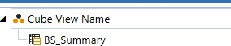
Figure 13.1
It is always recommended to populate the description on the artifact so that is what gets populated (see Figure 13.2).
My suggestion is to give the artifact a name that end-users will understand when searching for the report (see Figure 13.2). End-users could be confused if they only see BS_Summary, per the Figure
13.1 example above. However, the end-user is probably familiar with the naming convention of
Summary Balance Sheet, and by listing the report this way, it will be easier for them to find and use it.
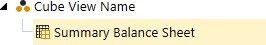
Figure 13.2
The next tip is around MarketPlace solutions. If you need to alter something or add to an existing MarketPlace solution, it would be befitting for the administrator to maintain naming continuity while making clear that a custom addition to the MarketPlace solution has been made.
For example, if one needed to add a button to the PLP solution, they could use btn_custom_ButtonX_PLP. This would allow future admins to know that this button isn’t part of the standard PLP solution. As always, documenting any customizations will also go a long way toward ensuring administrative continuity.
For something as robust as Cube Views, which tend to have a ton of alternate uses, it is beneficial to have something that identifies whether the Cube View is being used as a form or as a report.
Putting a prefix at the start of the name of either frm_ or rpt_ will help existing and future administrators maintain the application.
Dashboard components are sometimes considered a free-for-all. In the reference guide, OneStream highly recommends using some type of prefix for any and all dashboard components. Below is the recommended prefix, if needed.
| biv_ | BI Viewer |
| bkv_ | Book Viewer |
| btn_ | Button |
| cbx_ | Combo Box |
| chk_ | Check Box |
| cht_ | Chart (Basic) |
| chtn_ | Chart (Advanced) |
| cv_ | Cube View |
| da_ | Data Adapter |
| das_ | Date Selector (Windows App Only) |
| der_ | Data Explorer Report |
| dex_ | Data Explorer |
| fvw_ | File Viewer |
| grd_ | Grid View |
| gtv_ | Gantt View |
| img_ | Image |
| lbl_ | Label |
| lbx_ | List Box |
| logo_ | Logo |
| lpg_ | Large Data Pivot Grid (Windows App Only) |
| map_ | Map |
| pbx_ | Password Box |
| piv_ | Pivot Grid (Windows App Only) |
| rbg_ | Radio Button Group |
| rpt_ | Report |
| sid_ | State Indicator |
| spp_ | Supplied Parameter |
| spr_ | Spreadsheet (Windows App Only) |
| tbx_ | Text Box |
| ted_ | SQL Table Editor |
| tree_ | Member Tree |
| trv_ | Tree View |
| txd_ | Text Editor (Windows App Only) |
| txv_ | Text Viewer |
| web_ | Web Content |
Figure 13.3
For other specific naming conventions, please refer to the chapters associated with the artifacts themselves (e.g., the chapters on Cube Views or security). Naming conventions can be subjective, and customers often have their own naming convention standards. If you – as the administrator – are unsure, be consistent with your naming methodology.
Compliance and Audit
Common Audit-Related Reports
Reporting has been extensively covered throughout many chapters of this book. As your auditing partners start to evaluate the application and the data within it, providing them with reports becomes pivotal for the success of the auditing process. This section will discuss the MarketPlace solutions’ Standard Application Reports and Security Audit Reports.
Compliance and Audit › Common Audit-Related Reports
Standard Application Reports
Standard Application Reports are a set of predefined reports that can be imported into OneStream. The reports are based on SQL data adapters or method queries, and used to help end-users understand data or the application in greater detail. One of the lesser-known features of application reports is the Reports Overview page. This page gives a brief description and purpose for each report. For this chapter, we will only focus on the reports that could be valuable for our auditing partners.
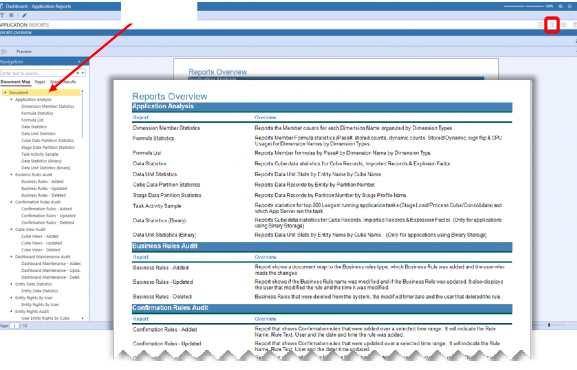
| Document |
Figure 13.4
Compliance and Audit › Common Audit-Related Reports › Standard Application Reports
Business Rules Audit
The reason this report is valuable to our auditing partners is that they often need to validate that actuals data coming into the system hasn’t been altered. This report allows auditors to determine that no changes to the rule have been made between specific time periods. Also, if rules were altered, the corresponding company should have the proper documentation to support the changes.
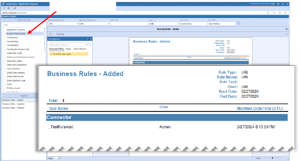
| Business Rules Audit |
The rules can be viewed by what was added, updated, or deleted. You can also view the changes by specific business rule type and by the rule name. This type of reporting allows organizations to identify key rules for their application to continuously monitor during month-end or year-end documentation cycles. For example, with direct connections, the report would validate that the connector rules haven’t been updated since go-live (or the last known agreed-upon change) and the sign-off on the rules during implementation.
Figure 13.5
Compliance and Audit › Common Audit-Related Reports › Standard Application Reports
Certification
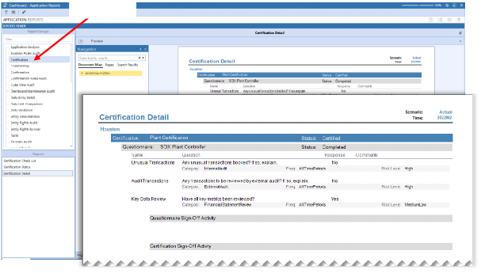
| Certification |
The Certification Check List report, Certification Status report, and Certification Detail provide information on workflow certifications. Any auditing partner might ask for proof regarding the certification of one, more, or all associated workflows. These reports can provide an overview if an auditor has put in such a request. These reports are Workflow POV driven, which requires you to change your Workflow POV to view the latest report. As seen in Figure 13.6, there are no reporting parameters to select.
Figure 13.6
Compliance and Audit › Common Audit-Related Reports › Standard Application Reports
Dashboard Maintenance Audit
The Dashboard Maintenance Audit report allows an administrator to validate all things dashboard-related. An administrator can select which dashboard maintenance unit to audit and subsequently select the portion of the dashboard upon which they would like to focus. This can be the dashboard group to a group of components and even data adapters. This is beneficial for an organization that has listed dashboards as a key report or key control. This report can also be separated by a time filter and run by items that were added, updated, or deleted.
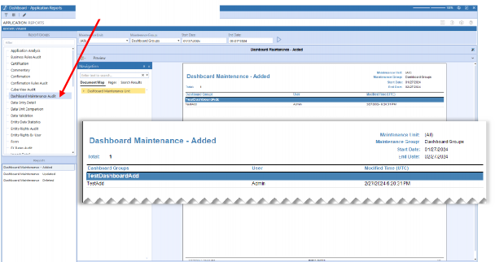
| Dashboard Maintenance Unit |
Figure 13.7
Compliance and Audit › Common Audit-Related Reports › Standard Application Reports
Map Change
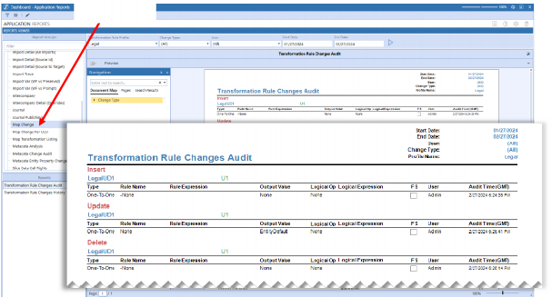
| Map Change |
As data is imported into the OneStream application, OneStream uses transformation rules. These rules are critical to an auditing partner and the auditing process. The customer usually provides the implementing partner with the transformation rules from the source system to OneStream early in any OneStream implementation project. Importantly, the customer will typically consider these mappings part of key controls and will need to report against them. With the Map Change report, the administrator can validate very specific transformation rule profiles for any updates, additions, or deletions of rules. These can also be completed using a time filter.
Figure 13.8
Compliance and Audit › Common Audit-Related Reports › Standard Application Reports
Journal
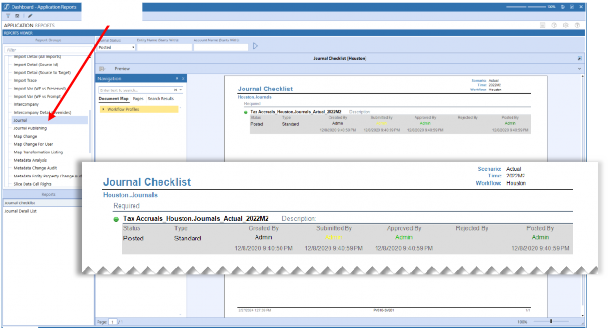
| Journal |
If the auditing partner has a requirement to audit or view specific journals, then the journal reporting section has two sub-reports: the Journal Checklist and the Journal Detail List. These reports are driven by the Workflow POV, and can retrieve the list of journals along with their status: Posted, Working, Submitted, Approved, or Rejected. These reports can be crucial for auditors wishing to examine all the journals posted by a specific period, or which journals are required by period. They also allow management to know which journals are still open before the month-end close can be finished.
Figure 13.9
Compliance and Audit › Common Audit-Related Reports › Standard Application Reports
Metadata Change Audit
With metadata being one of the most critical components of the application, it would be no surprise that metadata is heavily audited. Metadata has a direct effect and correlation on a customer’s actual reporting numbers, and within the Metadata Change Audit report, there are six active sub-reports that can help satisfy the most critical audit requirements. All six of these reports have the same reporting parameters, and they can be selected by change type (added, updated, or deleted) or by dimension to validate (all, or a specifically selected dimension) and, finally, a time filter.
Three of the reports can satisfy most (if not all) potential auditing questions. The first is the Member Changes Detail report. This report will list all the changes to a metadata member (including property changes) over a desired timeframe.
The next key report determines whether any metadata members have formulas attached to them. This becomes a key report when validating something such as a current year net income member for the balance sheet. This report can validate any changes against that member or any member that has a formula attached to the metadata member.
The final key report is the Relationship Detail Audit report. This report can validate that no relationship changes have occurred over a particular time period.
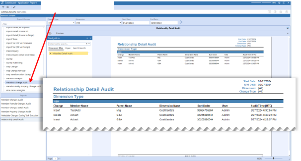
| Metadata Change Audit |
Figure 13.10
Although this is the last report discussed in this chapter’s application reports section, one can see that there are a lot of reports for this Marketplace solution. You, as the administrator, are encouraged to explore and possibly find even more reports to help you through your OneStream journey.
Compliance and Audit › Common Audit-Related Reports
Security Audit Reports
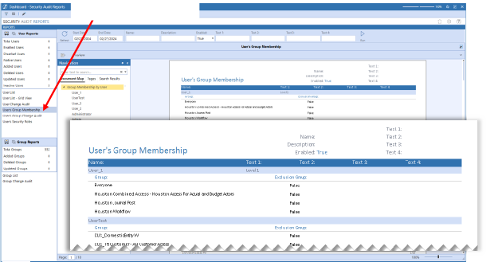
| User’s Group Membership |
Security Audit Reports is another MarketPlace solution detailing user and group information. These reports can range from the total user count, to users in a specific security group assignment, down to the changes that were made to a security group. All the reports have a time span filter to allow the administrator to filter by period. Often, companies will have to provide a security access review on a quarterly basis. These reviews are typically by end-user along with their associated security group and role assignments (Figure 13.11).
Figure 13.11
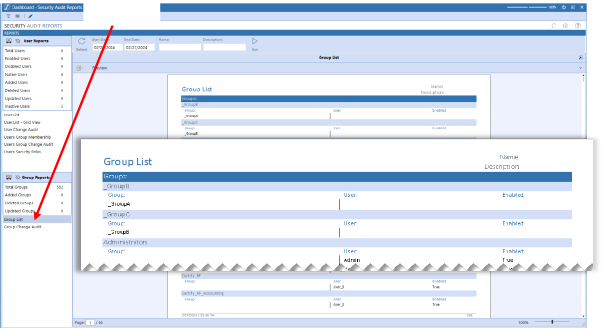
| Group List |
This security reporting package also offers a reverse view. Using the Group List and Administrator, an auditor can also see the total list of security groups and which users or other security groups are assigned to that specific group.
Figure 13.12
Of course, each of these reports (plus other reports) comes in a Change Audit report as well. You can see all the detailed changes for either users or groups in a specific report, too. This should give any auditor a full view of what is needed to complete any security access review request.
Compliance and Audit
Custom Audit Reports
If the reports covered above are unable to satisfy an audit requirement, then OneStream has standard audit-specific tables. These tables can be found on the System tab under the Tools section in the Database selection. Both the Application Database (Figure 13.13) and the System Database (Figure 13.14) have audit tables.
With OneStream being a relational database, an administrator with moderate expertise in SQL could easily write any audit request from the auditing partners. If this type of custom report is required, write the query into a dashboard data adapter and then attach that to the report dashboard component before building a nice dashboard around that report.
| Note: The application database has over 70 audit tables, and the system database has 25 audit tables to choose from. This might seem intuitive, but the application audit tables are only applicable to the artifacts found in the Application tab. The system database audit tables are only applicable to the System tab. |
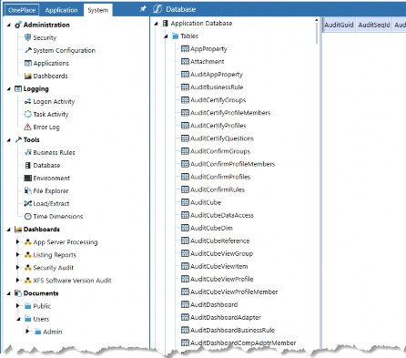
Figure 13.13
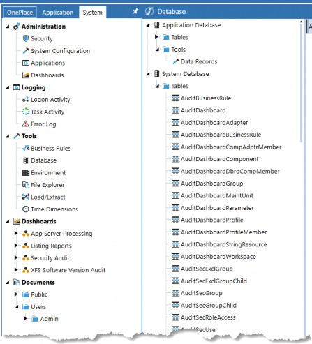
Figure 13.14
Compliance and Audit
Conclusion
This chapter has provided an overview of how to assist an administrator in completing either month-end requirements (to ensure nothing has changed from the key controls) or in providing certain details to auditing partners. If a company’s application has a strong naming convention, it is easy to filter down audit-specific reports to hand over to internal or external auditing partners. The chapter also offered broad oversight into common audit requests that OneStream has seen over many years and implementations.